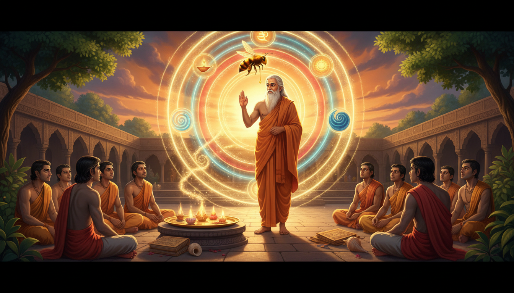

There is a remedy practice that almost every working astrologer has used and almost nobody can name: collecting. Not one deity, one mantra, one gem. Many sources, gathered into one vessel, until the vessel becomes more valuable than anything that went into it.

You can see it in the remedy lists. "Take the lords of the afflicted houses and offer them to the lord of the 9th." "Chant the benefic of the 5th alongside the dispositor." "Combine the deity of the transit with the deity of the natal Moon." Practitioners assemble a thali — a set of offerings on one plate, the several sources brought to a single point of presentation. And almost nobody asks the obvious question: who wrote this down first, and why did they choose a bee?
The answer is a rishi from the Kuru-Pañcāla plain, who was called Uddalaka Aruni, who taught a boy named Śvetaketu in a courtyard rather than a classroom, and who — on the evidence of the Wikipedia Uddalaka Aruni article — was beaten in the only debate that anyone remembers, by his own student.
Let us be precise about him, because the sources are unusually clear on this point and almost everything else about Uddalaka Aruni is veiled.
Part One: The Guru Who Lost the Only Debate That Mattered
1. The name is a job description
Uddalaka Aruni has one of the great origin stories of the Vedic period, and it is a story about fidelity, not about enlightenment.
The Uddalaka Aruni article, summarising the Adi Parva of the Mahabharata, puts it like this:
The Adi Parva describes Aruni as a disciple of Sage Ayoda-Dhaumya. Once a flood took place in the fields of the ashram. A breach was formed in the embankment. Dhaumya sent Aruni to stop the water from entering the embankment. After a long time, Aruni had not returned. So, Dhaumya went out to find Aruni. The latter was lying in the breach of the embankment to prevent the water from entering it. Because of his loyalty, Aruni is also known as Uddalaka Aruni as a mark of his preceptor's respect.
Read that again slowly, because it changes how you should use his name.
His personal name was Aruni. The title Uddalaka was given to him by his teacher — and it was given for a mundane, physical, unglamorous act of loyalty: a man lying in a breach in an earthen embankment with his body, plugging a flood, until his preceptor came looking. Not a fire sacrifice. Not a trance. Not a cosmic revelation. A body in a hole, holding water back.
That is the entire payload of the name. And notice what it implies for practice: this is the rishi of holding a breach. Of standing where the force is going and not moving. Of the repair, not the breakthrough.
The working form: Before you name Uddalaka Aruni in a remedy, name which Uddalaka you are invoking, in one line, with the reason. Say plainly: the rishi Uddalaka Aruni, teacher of Śvetaketu and preceptor of Yājñavalkya, or the composer of the Aruni Upanishad, or the author of the Madhu Vidya. These are different handles carrying different ritual payload. The Madhu Vidya is a technique. The Aruni Upanishad is a renunciation manual. The name itself is a duty. Most practitioners will mix all three, then wonder why the rite did nothing. Pick the handle that matches the fix, and write it on the sheet beside the remedy. Ninety seconds. It is the highest-leverage habit in this entire article.
2. The lineage, the students, and one very famous defeat
Here is the article's own compact biography, which we should take apart:
Uddālaka Āruṇi was a Brahmin of the Gautama lineage who was from Kuru-Pañcāla. He was the pupil of Aruṇa (his father) and Patañcala Kāpya. He was the preceptor of Yājñavalkya Vājasaneya, Kahola Kauṣītaki, Proti Kausurubindi, and his own son Śvetaketu Auddālaki. He defeated Prācīnayogya Śauceya and likely Bhadrasena Ājātaśatrava in debate, but was defeated in the debate of Bahudakshina Yajna held at the court of King Janaka in Mithila, by his own pupil Yājñavalkya.
Set the two halves of that sentence against each other.
First half: he defeated Prācīnayogya Śauceya and probably Bhadrasena Ājātaśatrava. Two famous debaters, beaten.
Second half: he was defeated by his own student, Yājñavalkya, at the Bahudakshina Yajna held at King Janaka's court in Mithila.
Uddalaka Aruni is therefore one of the very few documented cases in Indian philosophical history of a guru publicly out-argued by his own disciple — and the disciple in question, Yājñavalkya Vājasaneya, is himself a towering figure of the Brihadaranyaka Upanishad. The teacher was the better-known natural philosopher of the two, and the student was the better-known metaphysician. The tradition recorded the defeat rather than hiding it, and it recorded it in the Adi Parva, where Aruni's own name is also explained.
His pupils matter enormously for what a remedy can legitimately claim:
| Pupil | Relationship | What it licenses |
|---|---|---|
| Śvetaketu Auddālaki | his own son | The Chandogya 6.1–16 and 5.3 dialogues — Atman and Brahman, the salt, the honey |
| Yājñavalkya Vājasaneya | pupil who defeated him | A lineage that runs into the Brihadaranyaka itself |
| Kahola Kauṣītaki | pupil | The Kauṣītaki Upanishad |
| Proti Kausurubindi | pupil | The Proti Upanishad / Prapathaka's teacher |
Note also the Kauṣītaki Upanishad detail, which pins down the full name and the setting:
In verse 1.1 of the Kaushitaki Upanishad, where the scion of Gangya invites Aruni, but he sends his son to the event. This verse is notable for the conversation therein that suggests the full name of Aruni to be Uddalaka Aruni Gautama, and the mention of him as one of the characters in a group event that hosted "Vedic studies in the hall of sacrifice" ( yajna ).
Two things there. First, the full name: Uddalaka Aruni Gautama. Second, the setting: a yajna — a group ritual gathering of Vedic students. Uddalaka did not teach from a solitary ashram cell. He taught inside a working sacrificial complex, alongside other teachers and other students, in front of a gathering. And in this very first recorded appearance of him, he sends his son in his place.
The working form: When you build a multi-source remedy, send the junior one first. This is not sentimentality; it is a sequencing rule drawn straight from the Kauṣītaki record. Uddalaka Aruni did not decline the invitation — he delegated it, sending Śvetaketu while he stayed. So: in a remedy where several items must be assembled, present the least powerful item first and the most potent last. The order is itself part of the offering. Most practitioners instinctively place their strongest deity first, because they want to feel it work. The Kauṣītaki verse says otherwise: the senior holds back, the junior goes first, and the room is assembled before the force arrives.
3. The one he taught who out-argued him, and the one who wrote it down
It is worth pausing on the shape of the evidence, because it is unusual and it protects us from a specific error.
Uddalaka Aruni's own words survive only because other people wrote them down — chiefly his son. The Uddalaka Aruni article is careful about this:
In sections 6.1–16 and 5.3 of the Chandogya Upanishad, as a major dialogue between Aruni and his son Svetaketu, a dialogue about Atman and Brahman that contain ideas foundational to the Vedanta school of Hindu philosophy. The dialogue sets the context of the son, who goes to a Vedic school for twelve years of studies, is conceded that he has learnt the books (Vedas). Aruni, the father enquires and presses Svetaketu whether at school, he pondered and understood the nature of existence, what is truth, what is reality, the meaning of life and self-knowledge, and the relationship between oneself, other beings and the universal self.
That is the only reason we have the Chandogya's central dialogues. A son who had memorised twelve years of Vedic text came home, and a father asked him not what he had learned but what he had understood. And the answer was, essentially, nothing — and so the teaching happened.
Now the scholarly framing, which is worth reading carefully because it corrects a modern error:
According to Ben-Ami Scharfstein, a professor emeritus of Philosophy at Tel Aviv University, Uddalaka Aruni was one of the first philosophers in recorded history. Debiprasad Chattopadhyaya established Uddalaka Aruni as the first ' natural scientist ' in the intellectual history of the world. In the Chandogya Upanishad, Aruni asks metaphysical questions concerning the nature of reality and truth, observes constant change, and asks if there is something eternal and unchanging. From these questions, embedded in a dialogue with his son, he presents the concept of Ātman (soul, Self) and Brahman (universal Self).
And the article's account of the Brhadaranyaka appearances is pointedly modest:
In sections 3.7 and 6.2 of the Brihadaranyaka Upanishad, in a dialogue where Aruni is relatively a minor participant.
So the picture is: a man who appears as the central teacher in one Upanishad and as a minor participant in another. The Brihadaranyaka does not record him lecturing. It records him in the room.
The working form: When a remedy cites a teacher, cite the dialogue, not the reputation. The Uddalaka Aruni article is emphatic that his teaching survives in dialogue — father pressing son, teacher pressing student, question after question — and explicitly notes his minor participant status in the Brihadaranyaka. So in your remedy record, write down who asked what of whom. "Uddalaka Aruni's Madhu Vidya" is a label. "Uddalaka Aruni's Madhu Vidya, in the form of the Chandogya 3.1–11 dialogue with Śvetaketu, applying the bees-and-flowers simile to the gathering of rasa from the Vedas, the Itihasa and the Upanishads" is a form. The first can be performed by anyone. The second cannot.
4. Three elements, and a theory of rain
Before the philosophy, there is the physics — and it is stranger than expected.
According to his theory, there are three elements that make up living things, each of which is a power. The elements are heat, water, and food (meaning plant). He believed the primal creation due to desire emanated heat/light, light having same desire emanated water from itself, then water having the same desire emanated food from itself, which according to him explains why there is plenty of food when it rains. Aruni explained that the existent entered these three elements and when it entered, it caused the elements to contain something of the other two. Fire, for example, not only contains heat but also other two elements.
Hold that structure: heat, water, and food (plant) — three elements, each a power, each containing a trace of the other two, and the whole thing driven by desire at every stage. Light desires, so water comes from light; water desires, so food comes from water. And then — the part that is genuinely an early scientific intuition — the reason there is food when it rains.
Three elements with traces of one another inside each is also, structurally, a five-fold scheme waiting to happen. And it is important for this article that Uddalaka Aruni is the one who built it.
The working form: When you combine sources in a remedy, combine them the way his elements combine — so that each carries a trace of the others. Uddalaka Aruni's three elements are not three separate pots; the article is explicit that "the elements to contain something of the other two," and that fire "not only contains heat but also other two elements." So the remedy-thali is not a list of unrelated offerings. Each item must carry at least one trace of the others. Concretely: if you are offering the deity of the transit, its offering must also carry the glyph of the natal Moon's dispositor, and vice versa. If you cannot say how one item touches another, you are not assembling — you are just queueing.
Part Two: The Salt That Vanished
5. Clay and copper: how to know the universal from the particular
This is the hinge of the whole method, and it is stated as a technique, not a doctrine.
Uddalaka begins his explanation that one can know about the universal of a material substance from a particular object made of that substance. For example, by means of something made of clay, one can know clay; by means of an ornament made of copper, one can know copper.
Clay from an ornament. Copper from an ornament. The method is inferential: take one instance, and from it know the substance that is everywhere but never seen directly.
This is, precisely, what a horary astrologer does. You never see "Saturn's essence." You see a ring, and you infer metal. You never see "the 9th house." You see a placement, and you infer the substance of the thing that rules it. And the discipline the Chandogya imposes on the inferrer is the discipline of the whole Jyotiṣa enterprise: the particular must be a genuine instance of the universal, not a symbol of it. A clay ornament knows clay. A copper ornament knows copper. A picture of an ornament knows nothing.
The working form: Every remedy input must be a genuine instance, never a symbol. Before you build the thali, interrogate each item with Uddalaka's question: by means of this particular, do I know the substance? If your answer is "it represents Mars" or "it is the symbol of anger" — you are holding a picture of an ornament. You have learned nothing about the substance and you have no substance to give. If your answer is "this is Mars's own pada — its sign, its house, its lord, its deity" — then you hold a genuine instance, and the inference is licensed.
This single filter eliminates an enormous amount of folk practice. Most remedy lists are built from symbols.
6. The salt, the water, and the taste
And then the demonstration. The Uddalaka Aruni article reports it in a single paragraph, and it is worth having verbatim, because the method is the point:
Uddalaka next asks his son to put some salt in a glass of water. Shvetaketu does so. Upon being asked by his father to fetch the salt, Shvetaketu could not find it as it had dissolved in the water. Next, Aruni asks his son to taste the water. Upon being found salty, Uddalaka preaches Shvetaketu instruction on the Ultimate Reality.
He says, 'You don't perceive that one Reality (sat) exists in your body, my son, but it is truly there. Everything which is has its being in that subtle essence. That is Reality! That is the Soul! And you are that, Shvetaketu!'
This is not a metaphor for a metaphor. It is a physical demonstration, and it has exactly three steps:
- Dissolve — put a visible substance into an invisible medium. The salt is there. Now you cannot see it.
- Fail the search — send the student to fetch it. He cannot. The visible has genuinely ceased to be visible.
- Confirm by a different sense — taste it. It is there. It was there all along. The failure of sight was a failure of sight only.
And the conclusion he presses: "Everything which is has its being in that subtle essence."
Now place this beside the earlier image — the bees and the rivers:
Just as bees collect nectar from different sources, but when gathered together they form an undifferentiated mass; just as different rivers after flowing into the ocean become one with the ocean, similarly Atman resides individually in every being but merges with the Brahman and becomes one with it.
Bees gathering nectar from different sources into one mass. Rivers flowing into one ocean. A pinch of salt dissolved into water. These are three versions of one operation: many sources, gathered, into one substance that cannot be seen and cannot be separated back out.
And this is the operation that Jyotiṣa remedial work actually performs. You do not repair a Saturn-afflicted chart by adding Saturn. You gather the many — the lords, the dispositors, the deities, the nakṣatra-gods, the dharmic and the corrective — and you consolidate them into a single rasa: a thing whose presence is not visible on the chart but whose presence is tasteable. Testable. Real.
The working form: Build the remedy so that it can be tasted and not seen. Concretely, this is the most practical rule in the article. Do not offer a remedy whose effect is only visible on the chart. If the only evidence that your rite worked is that a chart looks different afterwards, you have built a picture of an ornament, and you have learned nothing about the substance. Build instead something whose confirmation is experiential and physical: a change in sleep, in the appetite, in the steadiness of the breath, in a pain's timing, in the tone of the voice. This is precisely the salt step — the substance is not visible, but it is tasteable. And it is why the Madhu Vidya itself defines its nectar by effects on the body, not by position on a page.
7. Tat Tvam Asi, and the identity that survives the transit
Many Mahavakyas are ascribed to sage Uddalaka Aruni. Among those, "Tat Tvam Asi" (That thou art) of the Chandogya Upanishad is an oft-quoted thought in Hinduism. Its teacher is Uddalaka Aruni and the student his son Svetaketu.
That thou art. The mahavakya is not a description of the world. It is an identity claim about the practitioner — and it is attributed to the man who demonstrated it with salt and water.
For a remedial astrology audience this is a genuinely load-bearing idea, because it answers a question practitioners ask constantly and answer badly: if the chart says Saturn is debilitated in my 8th, who am I? The answer Uddalaka Aruni's method supports is: you are not your chart's placements, and the salt is still in the water. The graha's condition is the visible form. The essence dissolved in the body is the substance. These are not two different things fighting each other; the second is what the first is made of.
The working form: Never let a transit become an identity. A debilitated or retrograde graha in the natal chart is a description of a substance in a particular vessel — it is the salt in the glass, still salt, still present, still working. It is not a statement about the person. Concretely, in your remedy record, write the affliction in the substance column, never in the person column. "Saturn debilitated in the 8th, affecting the 8th's significations — land, longevity, inheritance, hidden enemies" is a substance note. "I am unlucky, I will lose everything, I am doomed by the 8th" is an identity note, and it is the note that makes the practitioner stop working.
The Aruni Upanishad, which the article describes as "one of the oldest renunciation and monk life-related Sannyasa Upanishads," states the same principle in a monastic register: "bookish and ritual knowledge is irrelevant, the true pursuit of knowledge is the meaning, the essence and the import of Vedic ideas, one has the right and duty to abandon the worldly life in the singular pursuit of spirituality." Essence over inventory. Meaning over the list. The salt over the grain.
8. The atomism seed: what you cannot see, masses together
Parts of his works contain the seeds of Indian atomism, because of his belief that "particles too small to be seen mass together into the substances and objects of experience".
Stop and read that sentence with the rest of the article in hand. "Particles too small to be seen mass together into the substances and objects of experience."
That is: the invisible is not the opposite of the substance. The invisible is the substance, and it aggregates into what you can see.
This is the foundation of the honey method. Nectar is not visible in the flower. It is visible only in the honeycomb — after the bees have gathered it and given it a form. The bees take the invisible essence from many visible flowers and produce a visible substance. And the practitioner is the bee.
The Wikipedia article's See also section is revealing about where this sits in the scholarly frame: "Empedocles and Greek atomism." Uddalaka Aruni is being placed alongside Empedocles. That is a considerable claim for a Vedic teacher to be holding, and the article makes it deliberately.
The working form: You cannot gather what you cannot name. The atomist's rule has an exact practical corollary: the invisible constituent must be specified before it can be aggregated. So before assembling the thali, name the particle for each source — the exact substance you are collecting, in one phrase, per item. Not "Saturn's blessing." Name it: "the Saturn of delay and discipline, the Saturn of the 8th house, the Saturn as lord of my 10th." Three specifications. Now the nectar of that flower is nameable, and nameable nectar can be gathered. Vague intent cannot be gathered, because it has no particle.
Part Three: The Madhu Vidya — The Honey-Gathering Method
9. The flowers, the bees, and the honeycomb
Now the section that gives this article its method. The Chandogya Upanishad article, on the third chapter's first eleven volumes:
The Chandogya Upanishad presents the "Madhu Vidya" ("Honey Knowledge" or "Nectar of Knowledge") in the first eleven volumes of the third chapter. The sun is praised as a source of all light and life, and is stated to be worthy of meditation in a symbolic representation of the sun as the "honey" of all Vedas. The Brahman is stated in these volumes of verses to be the sun of the universe, and the 'natural sun' is a phenomenal manifestation of the Brahman.
And the simile itself:
The simile of "honey" is extensively developed, with the Vedas, the Itihasa and mythological stories, and the Upanishads are described as flowers. The Rig hymns, the Yajur maxims, the Sama songs, the Atharva verses and the deeper, secret doctrines of the Upanishads are represented as the vehicles of rasa (nectar), that is the bees. The nectar itself is described as "essence [of knowledge], fame, glory of countenance, vigour, strength, and health". The sun is described as the honeycomb laden with glowing light of honey. The rising and setting of the sun are likened to man's cyclic state of clarity and confusion, while the spiritual state of knowing Upanishadic insight of Brahman is described in the Chandogya Upanishad to be one with the Sun, a state of permanent day of perfect knowledge, a day which knows no night.
Stop and map the parts onto the practitioner, because every single term has a job:
| Chandogya term | What it is | What it is in a remedy |
|---|---|---|
| Flowers | The Vedas, the Itihasa, the mythological stories, the Upanishads | The sources: every text, deity, mantra and lordship you can legitimately draw on |
| Bees | The Rig hymns, Yajur maxims, Sama songs, Atharva verses, and the deeper secret doctrines of the Upanishads | The agents: the specific mantras, the deities, the ritual forms that do the gathering |
| Nectar (rasa) | "essence of knowledge, fame, glory of countenance, vigour, strength, and health" | What is actually collected — and note the list is bodily and social, not metaphysical |
| Honeycomb | The Sun, laden with glowing light of honey | The vessel: the place the gathered essence is deposited and offered |
| Sun's rising/setting | "man's cyclic state of clarity and confusion" | The cycle: periods of clarity and periods of confusion, both real |
| Permanent day | "a state of permanent day of perfect knowledge, a day which knows no night" | The goal: the state where the confusion half of the cycle stops |
The nectar's own definition is the most operationally useful line in the entire article, and it is almost never quoted. "Essence of knowledge, fame, glory of countenance, vigour, strength, and health." Not liberation. Not bliss. Knowledge, fame, countenance, vigour, strength, health. Six items, all of them things a person in a city on a weekday actually wants.
And note who is the bees. Not the flowers. The bees are the Rig hymns, the Yajur maxims, the Sama songs, the Atharva verses, and the deeper secret doctrines of the Upanishads — the textual forms, not the deities. The deities are in the flowers. The texts are the workers.
The working form: You are the bee, not the flower. This is the reframe the whole article is built to deliver. Most practitioners position themselves as the recipient of the deity's grace — the flower, waiting to be visited. The Madhu Vidya says the position of power is the worker: the text, the mantra, the japa-formula, the specific words, carried from flower to flower, gathering what the deity has to give. You are not asking Mars to bless you. You are the Rig hymn going to the Mars-flower and coming back with rasa. Write your remedy in the second person. Not "Shani will give me patience." The [text/form] I carry to Shani collects his patience, and I bring it back to my chart. That single grammatical shift changes what the practice feels like and what it can do.
10. Why the honeycomb is the Sun
Look again at where the honey is stored: "The sun is described as the honeycomb laden with glowing light of honey." The container is Sūrya. Not the Moon, not Jupiter, not any benefic. The Sun.
That is a very large claim, and it is standard Jyotiṣa: Sūrya is the karaka (significator) of the soul, of the sovereign, of the father, of the eye, and of the vitality; and the Sun is the giver of prāṇa, as the Prana article states — "In Hindu literature, prāṇa is sometimes described as originating from the Sun and connecting the elements."
And here the two halves of the article lock together. The honeycomb is the Sun. The bees are the texts. The flowers are the Vedas and the deities. The nectar is the essence of knowledge, vigour, strength and health. But the prāṇa — the actual life-force that Uddalaka Aruni's method is a method for gathering — is described as originating from the Sun.
So the Madhu Vidya and the Prana doctrine are not two traditions. They are one: the Sun is the vessel in which gathered essence becomes living force, and the vessel is what everything is finally offered to.
The working form: Offer the gathered essence to the Sun, and let the Sun keep it. Practically, this is the simplest and most neglected rule in remedial astrology, and it has a hard, checkable form: every thali you build ends with a Surya offering — the deity of the solar weekday, the Sūrya mantra, a lamp lit at sunrise or sunset — and it ends there, because the Sun is the honeycomb, and putting nectar into a vessel that is not the honeycomb wastes the collection. When a remedy "doesn't land," check this first: was there a Sun in it? A remedy built entirely from benefics, with no Sūrya in the vessel, has bees and flowers but no honeycomb.
11. The rising and the setting: your confusion half is real
The rising and setting of the sun are likened to man's cyclic state of clarity and confusion.
Note that this is stated with total flatness. There is no promise that the confusion half will go away. There is a cycle, and one of its two halves is called confusion, and it is as real as the other half.
This is the Chandogya article's own account of the Śāṇḍilya teaching in 3.14, which is a different teacher — Śāṇḍilya, not Uddalaka — but it states the same remedy-register principle in a form worth knowing:
This [S]elf (atman) of mine that lies deep within my heart — it is smaller than a grain of rice or barley, smaller than a mustard seed, smaller even than a millet grain or a millet kernel; but it is larger than the [E]arth, larger than the intermediate region, larger than the sky, larger even than all these worlds put together. This [S]elf (atman) of mine that lies deep within my heart—it contains all actions, all desires, all smells, and all tastes; it has captured this whole world; it neither speaks nor pays any heed. It is Brahman . On departing from here after death, I will become that. A man who has this resolve is never beset at all with doubts. This is what Shandilya used to say.
Compare Uddalaka's salt with Śāṇḍilya's grain of rice. Both are: a substance too small to see, larger than the world. Salt dissolved in water. A mustard seed in the heart that contains all actions and desires and does not speak. Two teachers, one article, one Upanishad, two demonstrations of the same invisible substance — arriving at it from opposite directions. Uddalaka dissolves something to show the essence is still there. Śāṇḍilya shrinks something to show the essence was always larger than the container.
The working form: Never test a remedy only in the clarity half of the cycle. Build the record so that it can survive your next bad phase, because the article is explicit that the confusion half is a half, not a failure. Two concrete disciplines: (1) Fix the count, the deity, the address and the day of the week — then run the form through at least one full cycle of the afflicting planet, so that you are sampling both halves rather than only the good weather; (2) Write down what happened during the confusion half separately from what happened during the clarity half. Most remedy records are written only in the good half, which is why most remedy records are worthless.
Part Four: The Five-Prana Gathering
12. The organ the demons could not break
Before the anatomy, the theology — because the Chandogya article tells the Udgitha story, and the end of that story is the whole justification for working with prāṇa at all.
The gods revered the Udgitha as the sense of smell (the nose), but the demons cursed it and ever since, one smells both good-smelling and bad-smelling things, because the sense of smell is afflicted with good and evil. [...] Then the gods revered the Udgitha as Manas (the mind), but the demons struck it and therefore one imagines both what is worth imagining and what is not worth imagining, because the mind is afflicted with good and evil. Then the gods revered the Udgitha as Prāṇa (vital breath, breath in the mouth, life-principle), and the demons struck it but they fell into pieces. Life-principle is free from evil, it is inherently good. The gods inside humans – the bodily organs and senses are great, but they all revere the life-principle because it is the essence and the lord of all of them. Om is the Udgitha , the symbol of life-principle in humans.
Read the sequence carefully, because it is a structure of defeat:
- The gods took the Udgitha to overcome the demons.
- They revered it successively as smell — afflicted, so we smell both good and bad.
- As speech — afflicted, so we speak both truth and untruth.
- As sight — afflicted, so we see both harmonious and chaotic.
- As hearing — afflicted, so we hear both worth hearing and not.
- As mind — afflicted, so we imagine both worth imagining and not.
- As prāṇa — and the demons struck it but they fell into pieces.
Every other limb got split into a good half and a bad half. Prāṇa did not. It refused the split. And the reason is stated: "the life-principle is free from evil, it is inherently good."
And then the line that connects this to the honey: "the bodily organs and senses are great, but they all revere the life-principle because it is the essence and the lord of all of them."
The working form: In every remedy, the prāṇa is the thing that is not split — so let it be the thing you address first. Concretely: the first item in every thali must be a prāṇa-item, because prāṇa is the limb that has no bad half and is therefore the correct recipient for anything you are trying to consolidate. And the article supplies the exact form for it: "Om is the Udgitha, the symbol of life-principle in humans." Om goes first. Not the afflicted planet's mantra — Om. The gathering vessel must be standing before the collection begins.
13. The five vāyus, and which one your transit broke
Now the anatomy, from the Prana article:
Five types of prāṇa, collectively known as the five vāyus ("winds"), are described in Hindu texts. Ayurveda, tantra and Tibetan medicine all describe prāṇa vāyu as the basic vāyu from which the other vāyus arise.
Prana is divided into ten main functions: The five Pranas – Prana, Apana, Udana, Vyana and Samana – and the five Upa-Pranas – Naga, Kurma, Devadatta, Krikala and Dhananjaya.
The concept is elaborated upon in great detail in the literature of haṭha yoga, tantra, and Ayurveda.
And the table the article gives, which is the operative diagnostic instrument:
| Vāyu | Location | Movement | Responsibility | Balance → health |
|---|---|---|---|---|
| Prāṇa | Head, lungs, heart | inward and upward | the vital life force | a balanced and calm mind and emotions |
| Apāna | Lower abdomen | outward and downward | elimination, reproduction, skeletal health (absorption of nutrients) | a healthy digestive and reproductive system |
| Udāna | Diaphragm, throat | upward | respiratory functions, speech, functioning of the brain | healthy respiratory system, clarity of speech, healthy mind, good memory, creativity |
| Samāna | Navel | spiral, around the navel, like a churning motion | digestion on all levels | a healthy metabolism |
| Vyāna | from the heart, distributed throughout | outward, like the circulatory process | circulatory system, nervous system, cardiac system | a healthy heart, circulation and balanced nerves |
And a line that explains the failure mode better than any remedial manual:
When the mind is agitated due to our interactions with the world at large, the physical body also follows in its wake. These agitations cause violent fluctuations in the flow of prana in the nadis.
This is the mechanistic link between a bad transit and a symptom. A transit agitates the mind; an agitated mind produces violent fluctuations in the prāṇa flow; the prāṇa flow fluctuates in a particular vāyu; that vāyu's domain misbehaves — and the Prana article tells you exactly which domain that is, in a table, with a named balance-outcome.
So a diagnosable remedial protocol becomes available:
| Affliction pattern | Vāyu involved | Body domain it governs |
|---|---|---|
| mind racing, panic, breathlessness, chest tightness, loss of nerve | Prāṇa | head, lungs, heart; "a balanced and calm mind and emotions" |
| digestion, elimination, reproductive and skeletal weakness | Apāna | lower abdomen; "healthy digestive and reproductive system" |
| voice, memory, breathlessness, mental fog | Udāna | diaphragm, throat; "clarity of speech, healthy mind, good memory, creativity" |
| metabolism, assimilation, weight change without cause | Samāna | navel; "a healthy metabolism" |
| nerves, circulation, cardiac symptoms | Vyāna | from the heart throughout; "healthy heart, circulation and balanced nerves" |
The working form: Diagnose the vāyu before you choose the deity. This is the single most useful thing in the article for a working practitioner, and almost nobody does it, because the vāyu table gives you a symptom axis while the standard remedy list gives you a planet axis. The two axes cross, and the crossing is the diagnosis. Saturn afflicting the 4th house → look for the Apāna signature (the 4th is home, land, comfort, the mother's body — and apāna governs absorption, the skeletal and the domestic). Jupiter afflicting the 9th → the Udāna signature (voice, memory, the guru, the father, the long journey — and udāna governs speech, memory, the brain). Mars afflicting the 7th → the Vyāna signature (the 7th is the partner, the contract, the circulation of other people through your life). Write the crossing down before you open the remedy lists, or you will pick a deity that matches the planet and miss the one that matches the symptom.
14. The 72,000 nadis, and the one you actually use
Indian philosophy describes prana flowing in nadis (channels), though the details vary. The Brhadaranyaka Upanishad (2.I.19) mentions 72,000 nadis in the human body, running out from the heart, whereas the Katha Upanishad (6.16) says that 101 channels radiate from the heart. The Vinashikhatantra (140–146) explains the most common model, namely that the three most important nadis are the Ida on the left, the Pingala on the right, and the Sushumna in the centre connecting the base chakra to the crown chakra, enabling prana to flow throughout the subtle body.
And the technique that goes with it:
Many pranayama techniques are designed to cleanse the nadis, allowing for greater movement of prana. Other techniques may be utilized to arrest the breath for samadhi or to bring awareness to specific areas in the practitioner's subtle or physical body.
Pranayama is one of the eight limbs of yoga described in the Yoga Sutras of Patanjali, and is a practice of specific and often intricate breath control techniques. The dynamics and laws of Prana were understood through systematic practice of Pranayama to gain mastery over Prana.
Two things to hold: 72,000 nadis (a figure that keeps recurring in Jyotiṣa-adjacent systems for the number of pathways connecting planets to the body), and one nadi you actually work: Sushumna, central, base chakra to crown.
And the Prana article gives a bridge to the Vedic sacrificial frame that is directly relevant to a remedial ritual:
Texts like the Vaikānasasmārta utilized the five prāṇas as an internalization of the five sacrificial fires of a panchāgni homa ceremony.
The five prāṇas are the five sacrificial fires, internalised. That is the doctrinal warrant for calling this a gathering: what the five vāyus do in the body is what the panchāgni does in the courtyard. The homa and the pranayama are the same operation at two scales.
And the offering that closes the loop, from the Taittiriya Upanishad article — the prāṇa as the pleasure-ground of Brahman:
the Brahman whose body is space, whose self is truth ( satya ), whose pleasure ground is the lifebreath ( prana ), and whose joy is the mind; the Brahman who is completely tranquil and immortal. O Pracinayogya, venerate it in this manner!
The working form: Work the middle channel, and make the five fires internal. Two rules, both checkable. (1) Cleanse before you collect. The article's order is cleanse → move → then bring awareness to specific areas. Nadi-śodhana with a counted round comes before any collection work, never after; a gathering performed into a fouled channel is a gathering into a drain. (2) Internalise the five fires. The Vaikānasasmārta warrant means the five vāyus must be felt in their own seats — head/lungs/heart, lower abdomen, diaphragm/throat, navel, heart-throughout — as five distinct places, before you ask any of them to carry an offering. If you cannot localise all five, you are not doing the panchāgni; you are breathing.
15. Why the life-force belongs to the Vedic line, not to the Tantric one
One more piece of the Prana article that bears directly on the ethics of a remedy:
The Bhagavad Gita verse 4.27 describes the yoga of self-control as the sacrifice of the actions of the senses and of prāṇa in the fire kindled by knowledge.
Fire kindled by knowledge. Not by longing, not by fear, not by a planet's malefic aspect. And this pairs with the Chandogya article's account of the ethics of the Soma-festival:
The section 3.17 of Chandogya Upanishad describes life as a celebration of a Soma-festival, whose dakshina (gifts, payment) is moral conduct and ethical precepts that includes non-violence, truthfulness, non-hypocrisy and charity unto others, as well as simple introspective life. This is one of the earliest mention of the Ahimsa principle as an ethical code of life, that later evolved to become the highest virtue in Hinduism.
Now Austerity [(Tapas), meditation], Charity [(Dāna), alms-giving], Uprightness [(Ārjava), sincerity and non-hypocrisy], Non-Violence [(Ahimsa), don't harm others] and Truthfulness [(Satya-vacanam)], - these are his Sacrificial Fees [(Dakshina), gifts, payment to others].
Dakshina. The fee paid to the officiant. In the Soma-festival of 3.17, the payment is conduct, not goods. Tapas, dāna, arjava, ahiṃsa, satya.
This is the discipline of the Madhu Vidya, and it is the reason the honey method works and the shopping-list method does not. You may not gather rasa from the flowers of another being's suffering. That is the rule the whole structure rests on: the nectar is "essence of knowledge, fame, glory of countenance, vigour, strength, and health" — all of it beneficial — and the Chandogya is explicit that the price is ahiṃsa and satya.
The working form: The dakshina is conduct, so pay it before you gather. Fix the ethical fee of the rite in advance and in writing, in the same fivefold form the Chandogya gives: tapas (austerity — a fixed discipline of effort), dāna (charity — a fixed amount, given before the collection, not after), arjava (uprightness — no fear-driven or ego-driven rite), ahiṃsa (non-violence — the remedy must not harm anyone, including in its preparation: no substance, no fast, no posture that injures), and satya (truthfulness — the record states what happened, not what you hoped). A remedy that fails the fee does not gather less nectar; it gathers something else.
Part Five: The Repair, Assembled
16. The Uddalaka Aruni repair, step by step
Everything above resolves into one sequence. This is the article's payload.
The Uddalaka Aruni repair, for a transit-afflicted chart:
- Name the handle. Which Uddalaka Aruni — the Madhu Vidya teacher, the Aruni Upanishad's renunciant, or the loyal holder of the embankment? Write it on the sheet with the remedy. One line. The name is a job description; use the right one.
- Diagnose the crossing. Before opening any remedy list, cross the planet axis with the vāyu axis. The Prana table gives you the symptom domain: prāṇa (mind, breath, chest), apāna (digestion, elimination, reproduction, skeleton), udāna (voice, memory, breath, brain), samāna (metabolism, assimilation, navel), vyāna (nerves, circulation, heart). Then match the transit's house to its domain. Write the crossing down. That is the diagnosis.
- Find the salt. Name the actual substance at stake — not "Saturn's blessing." The Saturn of delay and discipline; the Saturn of the 8th; the Saturn as lord of the 10th. Three specifications per source, per Uddalaka's atoms.
- Set the vessels. The honeycomb is the Sun. Every thali ends in a Sūrya offering — the deity, the mantra, the lamp, at a fixed solar hour. And the vessel must be standing before the collection: Om first, because prāṇa is the limb that was never split, and the article says plainly that the bodily organs "all revere the life-principle because it is the essence and the lord of all of them."
- Assemble with traces. Each item must carry at least one trace of the others, the way Uddalaka Aruni's fire carried heat and water and plant. Transit deity carries the natal Moon's dispositor; natal deity carries the transit's lord. If two items share nothing, you are queueing, not assembling.
- Order it junior-first. The Kauṣītaki precedent: Uddalaka Aruni sent his son and stayed. Present the least potent item first, the strongest last. The order is part of the offering.
- Cleanse, then collect. Nadi-śodhana with a counted round, then the collection. Never the other way round. Then the five vāyus, felt in their own five seats — the internalised panchāgni.
- Move the bees, not the flowers. You are the text, the formula, the japa-form. Write the remedy in the second person: the [form] I carry collects his patience. Not Shani will give me patience.
- Fix everything. The count (108, or 21, or 11 — fixed, never adjusted to how the day went). The address (the navel-to-crown Sushumna; the five vāyu seats). The day of the week. The start date. A remedy with a fixed frame is comparable across months; a remedy without one is not.
- Pay the dakshina. Tapas, dāna, arjava, ahiṃsa, satya — fixed in advance, in writing, and paid before the gathering, because the nectar is beneficial essence and the fee is conduct.
- Keep the record. What was gathered, from which flower, by which form, into which honeycomb, on what count, on what day — and, separately, what happened during the confusion half of the cycle. A record written only in the clarity half is worthless, because the Madhu Vidya says outright that the sun's setting is as real as its rising.
17. Two forms for the gathering: the vessel and the medicine
Because the article is about occult practice, and because the sources give two concrete divine forms for the two things a gathering produces, they should be named.
The vessel — Dhanvantari. The Dhanvantari article:
Dhanvantari ( Sanskrit : धन्वन्तरि , romanized : Dhanvantari, Dhanvamtari , lit. ' moving in a curve ') is the physician of the devas in Hinduism. He is regarded as an avatar of Vishnu. He is mentioned in the Puranas as the god of Ayurveda.
According to the ancient Sanskrit work Vishnudharamottara , Dhanvantari is described as handsome and usually depicted with four hands, with one or two of them carrying a bowl of amrita, the elixir of immortality.
The Bala Kanda of the Ramayana and Bhagavata Purana state that Dhanvantari emerged from the Ocean of Milk and appeared with the pot of amrita (elixir of immortality) during the Samudra Manthana, whilst the ocean was being churned by the devas and the asuras, using the Mandara mountain and the serpent Vasuki.
The medicine — Hayagriva. The Hayagriva article:
is a Hindu deity, the horse-headed avatar of Vishnu. The purpose of this incarnation was to slay a danava also named Hayagriva (A descendant of Kashyapa and Danu), who had the head of a horse and the body of a man.
He has four hands, with one in the mode of bestowing knowledge; another holds books of wisdom, and the other two hold the Conch and Discus. His beauty, like fresh cut crystal, is an auspicious brilliance that never decays. May this Lord of speech who showers such cooling rays of grace on me be forever manifest in my heart!
Note the four hands and what they hold: one bestowing knowledge, one holding books of wisdom, and the Conch and the Discus. The two weapons are śaṅkha and cakra — the two halves of the prāṇa-complex in the Vedas: the Chandogya article's Udgitha legend has the Udgitha taken up successively as smell, speech, sight, hearing, mind, and prāṇa, with Om as the symbol of the life-principle. The conch is the sound; the discus is the wheel of the mind. Hayagriva is the form that holds knowledge as an object — books — alongside the two weapons of prāṇa. And the article gives his mantra, which is worth keeping verbatim for its structure:
jñānānandamayaṃ devaṃ nirmala sphaṭikākṛtim / ādhāraṃ sarva viddyānāṃ hayagrīvaṃ upāsmahe //
Knowledge-and-bliss, the god, of pure crystal's form — the support of all knowledge — Hayagriva, we worship.
The working form: Name the vessel and the medicine separately, and never let them swap. Dhanvantari is the vessel — the amrita pot, the churning, the thing that holds what was gathered and preserves it. Hayagriva is the medicine — knowledge made into an object, the books, the bestowing hand. Practically: for a chart whose problem is loss, depletion, a weakened body or a shattered vitality (the 8th, the 12th, a debilitated lagna lord, Saturn's debilitation), the remedy is vessel-shaped — Dhanvantari, the pot of amrita, the churning of the ocean of milk, the deposit of gathered essence. For a chart whose problem is ignorance, confusion, a broken teacher, a false advisor, a corrupted line of learning (the 9th, Jupiter afflicted, a compromised guru, a mistaken remedy), the remedy is medicine-shaped — Hayagriva, knowledge held as books, the conch and the discus, the crystal that does not decay. And note the pattern: Vessel and medicine are both Vishnu's forms. That is not a coincidence to be smoothed over — it is the structural claim that the collected essence and the intelligence that knows what to do with it are the same substance in two states.
18. The graha dictionary: which flower for which planet
Because a bee must know the flower, and because the Navagraha article gives the cleanest definition of what a graha even is:
are nine heavenly bodies and deities that influence human life on Earth according to Hinduism and Hindu mythology. The term is derived from nava (Sanskrit : नव "nine") and graha (Sanskrit : ग्रह "planet, seizing, laying hold of, holding"). The nine members of the navagraha are the Sun , Moon , planets Mercury , Venus , Mars , Jupiter , and Saturn , and the two nodes of the Moon Rahu, Ketu.
Graha means seizing, laying hold, holding. Not "star." Not "wandering light." Holding. And the nine are: Sūrya, Chandra, Budha, Śukra, Maṅgala, Bṛhaspati, Śani, and the two nodes Rahu and Ketu.
That word — holding — is the reason the honey method has the shape it has. A graha is a grip. Each planet holds some set of significations, and the whole art of remedial astrology is to decide which grip to strengthen, and which to redirect. A bee gathering nectar does not strengthen the flower; it takes from it and makes something new. That is exactly the operation of a remedy: the planet's grip is not removed, it is redeployed — its force collected into a form that can be spent where you need it.
The working form: For each graha in your thali, write down what it is holding and what you want it to hold instead. This is the graha article's own etymology put to work, and it is the most practical diagnostic in this piece. A graha holds significations. So for the afflicting planet: it is currently holding [X]; I am asking it to hold [Y] instead, and the vehicle for that transfer is [the form, the text, the deity]. Write all three. Then check the Navagraha set is complete: nine items, not eight — the nodes count, and Rahu and Ketu are the two most transferable grips in the system, because a node holds nothing of its own and takes entirely from what it is conjoined to. A remedy that leaves the nodes out of a 6th/8th-house afflicting chart is ignoring the two most movable handles on the board.
19. A last thing about the name
Return to the Adi Parva story, because it is the reason the article began with it.
A man lies in a breach in an embankment, holding water back with his body, until his teacher comes looking. He is given a name for it. Then he goes on to teach the most difficult conversation in the Upanishads — to his own son, who has come home after twelve years of memorising the Vedas and cannot answer a single question — and he demonstrates it by putting salt in a glass of water.
And then, at King Janaka's court, in Mithila, in the great debate, he is beaten by his own student.
The tradition recorded all three parts: the loyalty, the salt, and the defeat. It did not choose one. That is the shape of the method, and it is the shape of a repair. You hold the breach. You demonstrate what cannot be seen. And you accept the record of what happened. That is the standard Uddalaka Aruni sets, and it is a considerably higher standard than a remedy that claims success.